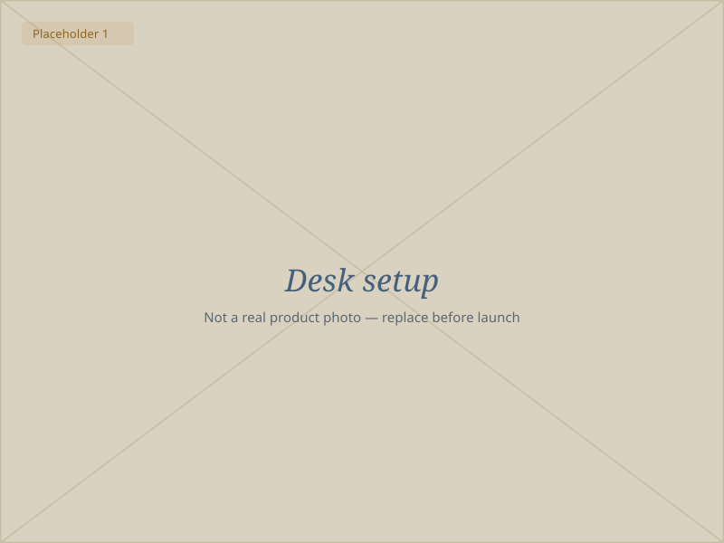
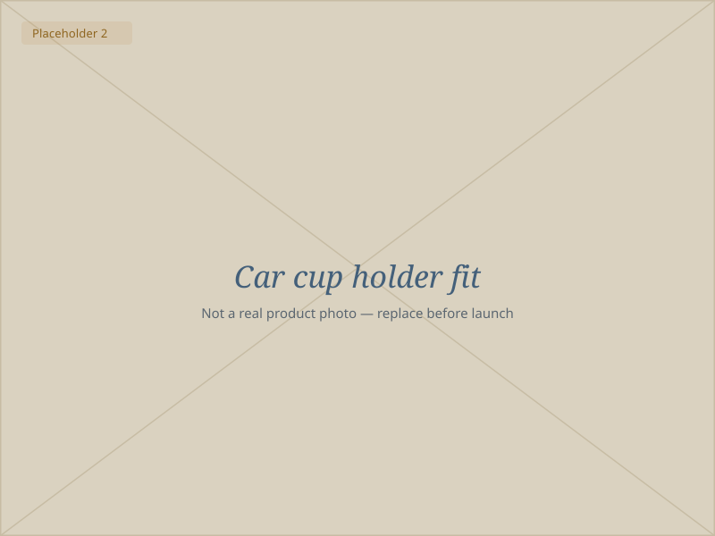
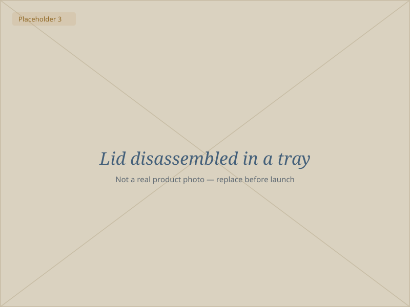
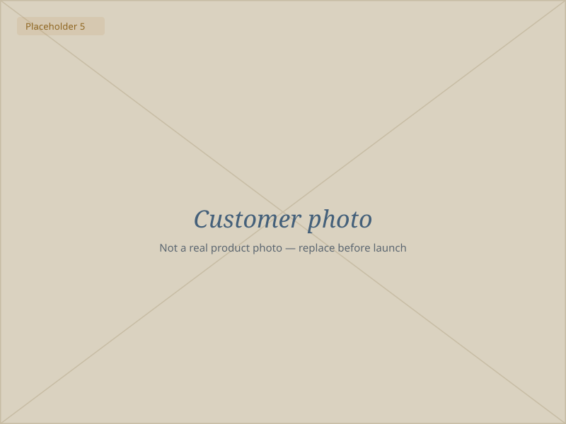

Loading the 3D model…
Drag to turn it · tap a marker
Interactive 3D model, estimated reconstruction: 62.9 mm across, 170 mm with the lid, 215 mm with the straw.
350 ml · matte stainless steel · straw lid
Still cold at six.
Made for people who live at a desk and in a car. Ice at nine is still ice after the last meeting, the straw lid doesn't weep into a bag, and the 63 mm base drops straight into a cup holder.
Free shipping over $45, and a spare straw with your first order.
★★★★★ 4.8 · 2,300+ reviews
Made in small runs. Orders ship Monday to Friday from Kuwait City; anything placed after 2 pm Thursday goes out on Monday.
Four things it does well
-
12h
Cold through the day
A double-wall vacuum body. Ice survives a full shift in a warm car.
-
0
Drips in your bag
A threaded lid and a gasketed straw grommet instead of a friction push-fit.
-
63
Millimetre footprint
Measured at 62.9 mm across the base — no wobble, no adapter ring.
-
5
Parts, all washable
Body, lid, straw, grommet and base pad separate for the top rack.
Interactive demo
Take it apart without holding it
The view has tilted to the straw opening. Play the exploded view to see all five parts, or turn the model and tap a marker.
- Body
- Insulated wall, closed interior, rounded base
- Lid
- Helical thread, hollow, central straw hole
- Straw grommet
- Soft seal around the straw
- Straw
- 204 mm tube, 7.4 mm outer diameter
- Base pad
- Non-slip, keeps it quiet on a desk
Loading the 3D model…
Tap a marker on the model to read about that part.
Where it earns its place

Nine hours at a desk
The narrow 63 mm body leaves room for a mouse. The base pad means you can put it down mid-call without announcing it to the room, and the straw means you drink more than you would from a lid you have to unscrew.

Then the commute
Straight sides, no taper, no rubber ring to lose — it seats in a standard holder and stays there. The lid threads down, so the school run doesn't end with a wet gearstick.

And it comes clean
Five parts, no glued assemblies. The grommet lifts out of the lid, so the one place that traps milk is the one place you can actually reach.
2,300 people already carry one
- 4.8average rating
- 2,300+reviews
- 94%would buy again
- 12hheld cold, tested
“Left it in the car at noon in July. Still had ice in it that evening.”
Reem A., verified buyer
“Third tumbler I've owned and the first whose lid I trust in a backpack.”
Jassim M., verified buyer
“The straw comes apart properly. That sounds small until you've cleaned the other kind.”
Dana K., verified buyer
Customer photos
Placeholder images
Materials
One tumbler, not 400 cups
A 350 ml daily habit is roughly 250 disposable cups a year. This is 18/8 steel with a matte powder coat, a polypropylene lid and straw, and a silicone grommet — all replaceable, none of them glued together.
Dimensions and capacity are estimates taken from our reference model: 350 ml measured below the lid roof, excluding drinking headspace. Not a certified measurement.
| Capacity | 350 ml (estimated, below the lid roof) |
|---|---|
| Diameter | 62.9 mm |
| Height, lid on | 170.1 mm |
| Height with straw | 214.5 mm |
| Straw | 204.3 mm · 7.4 mm outer · 5.9 mm inner |
| Body | 18/8 stainless, double wall, vacuum |
| Finish | Matte Mykonos blue powder coat |
| Care | Top rack; five separable parts |
Pick a finish and a pack
30 days to change your mind
Use it, wash it, take it to work. If it isn't for you, send it back within 30 days and we refund the tumbler.
Two-year seal warranty
If the lid or grommet stops sealing in normal use inside two years, we replace the part rather than the whole tumbler.
Shipping
Dispatch Monday to Friday from Kuwait City. GCC in two to four working days, international in five to nine. Free over $45.
Questions people actually ask
350 ml is measured below the lid roof on our reference model, excluding drinking headspace and the small thread recesses. Filled to a normal level with ice, expect a little under that. It's an estimate, not a certified measurement.
The base is 62.9 mm across and the body doesn't taper, so it fits the common 74 mm holder without a ring. Total height with the straw in is 214.5 mm — check your console lid clears that if it closes over the holder.
The lid threads on and the straw runs through a gasketed grommet, so upright and on its side in a bag it holds. We call it leak-resistant rather than leak-proof: it's a straw opening, not a valve, so we don't claim it survives being shaken upside down.
Top rack for the lid, straw and grommet. The body is fine on the top rack too, though hand washing keeps the matte coat looking new for longer.
Yes — straw, grommet and lid are all sold separately, and the seal warranty covers them for two years anyway. Nothing on this tumbler is glued in.
We dispatch Monday to Friday. Orders in before 2 pm go out the same day; after 2 pm Thursday they go out on Monday. We don't hold stock beyond the current run, so a sold-out finish waits for the next one.
Take the desk one with you.
350 ml, still cold at six, and a lid you can put in a bag. $34, free shipping over $45, and 30 days to send it back.
Small runs, dispatch Monday to Friday.